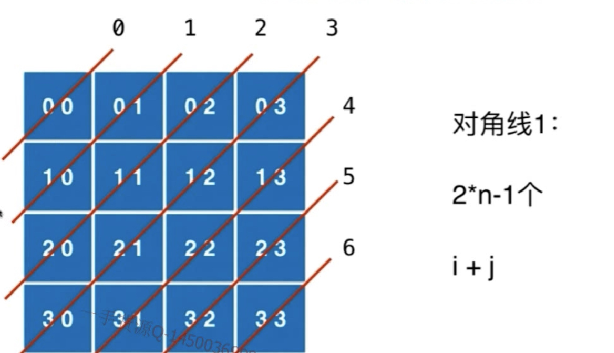

树形问题
Input: "23"
Output: ["ad", "ae", "af", "bd", "be", "bf", "cd", "ce", "cf"].
class Solution {
public:
vector<string> letterCombinations(string digits) {
if (digits.empty()) return {};
vector<string> res;
vector<string> dict{"", "", "abc", "def", "ghi", "jkl", "mno", "pqrs", "tuv", "wxyz"};
letterCombinationsDFS(digits, dict, 0, "", res);
return res;
}
void letterCombinationsDFS(string& digits, vector<string>& dict, int level, string out, vector<string>& res) {
if (level == digits.size()) {res.push_back(out); return;}
string str = dict[digits[level] - '0'];
for (int i = 0; i < str.size(); ++i) {
letterCombinationsDFS(digits, dict, level + 1, out + str[i], res);
}
}
};
- 字符串合法性 空字符串 多个解的顺序
- s(d[0..n-1]) = letter(d[0]) + s(d[1...n-1])
- leet_93
Input: "25525511135"
Output: ["255.255.11.135", "255.255.111.35"]
class Solution {
public:
vector<string> restoreIpAddresses(string s) {
vector<string> res;
restore(s, 4, "", res);
return res;
}
void restore(string s, int k, string out, vector<string> &res) {
if (k == 0) {
if (s.empty()) res.push_back(out);
}
else {
for (int i = 1; i <= 3; ++i) {
if (s.size() >= i && isValid(s.substr(0, i))) {
if (k == 1) restore(s.substr(i), k - 1, out + s.substr(0, i), res);
else restore(s.substr(i), k - 1, out + s.substr(0, i) + ".", res);
}
}
}
}
bool isValid(string s) {
if (s.empty() || s.size() > 3 || (s.size() > 1 && s[0] == '0')) return false;
int res = atoi(s.c_str());
return res <= 255 && res >= 0;
}
};
Input: "aab"
Output:
[
["aa","b"],
["a","a","b"]
]
class Solution {
public:
vector<vector<string>> partition(string s) {
vector<vector<string>> res;
vector<string> out;
helper(s, 0, out, res);
return res;
}
void helper(string s, int start, vector<string>& out, vector<vector<string>>& res) {
if (start == s.size()) { res.push_back(out); return; }
for (int i = start; i < s.size(); ++i) {
if (!isPalindrome(s, start, i)) continue;
out.push_back(s.substr(start, i - start + 1));
helper(s, i + 1, out, res);
out.pop_back();
}
}
bool isPalindrome(string s, int start, int end) {
while (start < end) {
if (s[start] != s[end]) return false;
++start; --end;
}
return true;
}
};
回溯算法
- 排列leet_46 perm(0...n-1) = num +perm(0...n-1 - 这个数字)
Input: [1,2,3]
Output:
[
[1,2,3],
[1,3,2],
[2,1,3],
[2,3,1],
[3,1,2],
[3,2,1]
]
class Solution {
public:
vector<vector<int>> res;
vector<bool> used = {false};
void generatPermutation(const vector<int>& nums, int index, vector<int>& p) {
if (index == nums.size()) {
res.push_back(p);
return;
}
for (int i = 0; i < nums.size(); i++) {
if (!used[i]) {
p.push_back(nums[i]);
used[i] = true;
generatPermutation(nums, index + 1, p);
p.pop_back();
used[i] = false;
}
}
return;
}
vector<vector<int>> permute(vector<int>& nums) {
if (nums.size() == 0)
return res;
used = vector<bool>(nums.size(), false);
vector<int> p;
generatPermutation(nums, 0, p);
return res;
}
};
Input: [1,1,2]
Output:
[
[1,1,2],
[1,2,1],
[2,1,1]
]
class Solution {
public:
vector<vector<int>> res;
vector<bool> used;
void generatPermutation(const vector<int>& nums, int index, vector<int>& p) {
if (index == nums.size()) {
res.push_back(p);
return;
}
for (int i = 0; i < nums.size(); i++) {
if(i > 0 && nums[i-1] == nums[i] && !used[i-1])
continue;
if (!used[i]) {
p.push_back(nums[i]);
used[i] = true;
generatPermutation(nums, index + 1, p);
p.pop_back();
used[i] = false;
}
}
return;
}
vector<vector<int>> permuteUnique(vector<int>& nums) {
if (nums.size() == 0)
return res;
used = vector<bool>(nums.size(), false);
vector<int> p;
sort(nums.begin(), nums.end());
generatPermutation(nums, 0, p);
return res;
}
};
组合
For example,
If n = 4 and k = 2, a solution is:
[
[2,4],
[3,4],
[2,3],
[1,2],
[1,3],
[1,4],
]
class Solution {
public:
vector<vector<int>> combine(int n, int k) {
vector<vector<int>> res;
vector<int> out;
helper(n, k, 1, out, res);
return res;
}
void helper(int n, int k, int level, vector<int>& out, vector<vector<int>>& res) {
if (out.size() == k) {res.push_back(out); return;}
for (int i = level; i <= n; ++i) {
out.push_back(i);
helper(n, k, i + 1, out, res);
out.pop_back();
}
}
};
Input: candidates = [2,3,5], target = 8,
A solution set is:
[
[2,2,2,2],
[2,3,3],
[3,5]
]
//重复元素i层级不加1
class Solution {
public:
vector<vector<int>> combinationSum(vector<int>& candidates, int target) {
vector<vector<int>> res;
vector<int> out;
combinationSumDFS(candidates, target, 0, out, res);
return res;
}
void combinationSumDFS(vector<int>& candidates, int target, int start, vector<int>& out, vector<vector<int>>& res) {
if (target < 0) return;
if (target == 0) {res.push_back(out); return;}
for (int i = start; i < candidates.size(); ++i) {
out.push_back(candidates[i]);
combinationSumDFS(candidates, target - candidates[i], i, out, res);
//重复元素i层级不加1
out.pop_back();
}
}
};
For example, given candidate set 10,1,2,7,6,1,5 and target 8,
A solution set is:
[1, 7]
[1, 2, 5]
[2, 6]
[1, 1, 6]
class Solution {
public:
vector<vector<int> > combinationSum2(vector<int> &num, int target) {
vector<vector<int> > res;
vector<int> out;
sort(num.begin(), num.end());
combinationSum2DFS(num, target, 0, out, res);
return res;
}
void combinationSum2DFS(vector<int> &num, int target, int start, vector<int> &out, vector<vector<int> > &res) {
if (target < 0) return;
else if (target == 0) res.push_back(out);
else {
for (int i = start; i < num.size(); ++i) {
//可以去除组合中的重复元素
if (i > start && num[i] == num[i - 1]) continue;
out.push_back(num[i]);
combinationSum2DFS(num, target - num[i], i + 1, out, res);
//不重复使用元素，所以层级+1
out.pop_back();
}
}
}
};
class Solution {
public:
vector<vector<int> > combinationSum3(int k, int n) {
vector<vector<int> > res;
vector<int> out;
combinationSum3DFS(k, n, 1, out, res);
return res;
}
void combinationSum3DFS(int k, int n, int level, vector<int> &out, vector<vector<int> > &res) {
if (n < 0) return;
if (n == 0 && out.size() == k) res.push_back(out);
for (int i = level; i <= 9; ++i) {
out.push_back(i);
combinationSum3DFS(k, n - i, i + 1, out, res);
out.pop_back();
}
}
};
If S = [1,2,3], a solution is:
[
[3],
[1],
[2],
[1,2,3],
[1,3],
[2,3],
[1,2],
[]
]
class Solution {
public:
vector<vector<int> > subsets(vector<int> &S) {
vector<vector<int> > res;
vector<int> out;
sort(S.begin(), S.end());
getSubsets(S, 0, out, res);
return res;
}
void getSubsets(vector<int> &S, int pos, vector<int> &out, vector<vector<int> > &res) {
//没有条件和外加边界限制
res.push_back(out);
for (int i = pos; i < S.size(); ++i) {
out.push_back(S[i]);
getSubsets(S, i + 1, out, res);
out.pop_back();
}
}
};
For example,
If S = [1,2,2], a solution is:
[
[2],
[1],
[1,2,2],
[2,2],
[1,2],
[]
]
class Solution {
public:
vector<vector<int>> subsetsWithDup(vector<int> &S) {
if (S.empty()) return {};
vector<vector<int>> res;
vector<int> out;
sort(S.begin(), S.end());
getSubsets(S, 0, out, res);
return res;
}
void getSubsets(vector<int> &S, int pos, vector<int> &out, vector<vector<int>> &res) {
res.push_back(out);
for (int i = pos; i < S.size(); ++i) {
if (i > pos && S[i] == S[i-1]) continue;
out.push_back(S[i]);
getSubsets(S, i + 1, out, res);
out.pop_back();
}
}
};
Input: n = 1
Return: ["1:00", "2:00", "4:00", "8:00", "0:01", "0:02", "0:04", "0:08", "0:16", "0:32"]
class Solution {
public:
vector<string> res;
void helper(vector<int>& chart,int&num,int curr,int idx,int hour,int min){
if(hour>11||min>59) return;
if(curr==num){
string tmp=to_string(hour)+":"+((min<10)?"0":"")+to_string(min);
res.push_back(tmp);
return;
}
for(int i=idx;i<chart.size();i++){
if(i<4)
helper(chart,num,curr+1,i+1,hour+chart[i],min);
else
helper(chart,num,curr+1,i+1,hour,min+chart[i]);
}
}
vector<string> readBinaryWatch(int num) {
vector<int> chart({1,2,4,8,1,2,4,8,16,32});
helper(chart,num,0,0,0,0);
return res;
}
};
二维平面
or example,
Given board =
[
["ABCE"],
["SFCS"],
["ADEE"]
]
word = "ABCCED", -> returns true,
word = "SEE", -> returns true,
word = "ABCB", -> returns false.
class Solution {
public:
bool exist(vector<vector<char>>& board, string word) {
if (board.empty() || board[0].empty()) return false;
int m = board.size(), n = board[0].size();
vector<vector<bool>> visited(m, vector<bool>(n));
for (int i = 0; i < m; ++i) {
for (int j = 0; j < n; ++j) {
if (search(board, word, 0, i, j, visited)) return true;
}
}
return false;
}
bool search(vector<vector<char>>& board, string word, int idx, int i, int j, vector<vector<bool>>& visited) {
if (idx == word.size()) return true;
int m = board.size(), n = board[0].size();
if (i < 0 || j < 0 || i >= m || j >= n || visited[i][j] || board[i][j] != word[idx]) return false;
visited[i][j] = true;
bool res = search(board, word, idx + 1, i - 1, j, visited)
|| search(board, word, idx + 1, i + 1, j, visited)
|| search(board, word, idx + 1, i, j - 1, visited)
|| search(board, word, idx + 1, i, j + 1, visited);
visited[i][j] = false;
return res;
}
};
class Solution {
public:
int numIslands(vector<vector<char>>& grid) {
if (grid.empty() || grid[0].empty()) return 0;
int m = grid.size(), n = grid[0].size(), res = 0;
vector<vector<bool>> visited(m, vector<bool>(n));
for (int i = 0; i < m; ++i) {
for (int j = 0; j < n; ++j) {
if (grid[i][j] == '1' && !visited[i][j])
helper(grid, visited, i, j);
++res;
}
}
return res;
}
void helper(vector<vector<char>>& grid, vector<vector<bool>>& visited, int x, int y) {
if (x < 0 || x >= grid.size() || y < 0 || y >= grid[0].size() || grid[x][y] == '0' || visited[x][y]) return;
visited[x][y] = true;
helper(grid, visited, x - 1, y);
helper(grid, visited, x + 1, y);
helper(grid, visited, x, y - 1);
helper(grid, visited, x, y + 1);
}
};
Example:
X X X X
X O O X
X X O X
X O X X
After running your function, the board should be:
X X X X
X X X X
X X X X
X O X X
class Solution {
public:
void solve(vector<vector<char> >& board) {
for (int i = 0; i < board.size(); ++i) {
for (int j = 0; j < board[i].size(); ++j) {
if ((i == 0 || i == board.size() - 1 || j == 0 || j == board[i].size() - 1) && board[i][j] == 'O')
solveDFS(board, i, j);
}
}
for (int i = 0; i < board.size(); ++i) {
for (int j = 0; j < board[i].size(); ++j) {
if (board[i][j] == 'O') board[i][j] = 'X';
if (board[i][j] == '$') board[i][j] = 'O';
}
}
}
void solveDFS(vector<vector<char> > &board, int i, int j) {
if (board[i][j] == 'O') {
board[i][j] = '$';
if (i > 0 && board[i - 1][j] == 'O')
solveDFS(board, i - 1, j);
if (j < board[i].size() - 1 && board[i][j + 1] == 'O')
solveDFS(board, i, j + 1);
if (i < board.size() - 1 && board[i + 1][j] == 'O')
solveDFS(board, i + 1, j);
if (j > 0 && board[i][j - 1] == 'O')
solveDFS(board, i, j - 1);
}
}
};
Given the following 5x5 matrix:
Pacific ~ ~ ~ ~ ~
~ 1 2 2 3 (5) *
~ 3 2 3 (4) (4) *
~ 2 4 (5) 3 1 *
~ (6) (7) 1 4 5 *
~ (5) 1 1 2 4 *
* * * * * Atlantic
class Solution {
public:
vector<pair<int, int>> pacificAtlantic(vector<vector<int>>& matrix) {
if (matrix.empty() || matrix[0].empty()) return {};
vector<pair<int, int>> res;
int m = matrix.size(), n = matrix[0].size();
vector<vector<bool>> pacific(m, vector<bool>(n, false));
vector<vector<bool>> atlantic(m, vector<bool>(n, false));
for (int i = 0; i < m; ++i) {
dfs(matrix, pacific, INT_MIN, i, 0);
dfs(matrix, atlantic, INT_MIN, i, n - 1);
}
for (int i = 0; i < n; ++i) {
dfs(matrix, pacific, INT_MIN, 0, i);
dfs(matrix, atlantic, INT_MIN, m - 1, i);
}
for (int i = 0; i < m; ++i) {
for (int j = 0; j < n; ++j) {
if (pacific[i][j] && atlantic[i][j]) {
res.push_back({i, j});
}
}
}
return res;
}
void dfs(vector<vector<int>>& matrix, vector<vector<bool>>& visited, int pre, int i, int j) {
int m = matrix.size(), n = matrix[0].size();
if (i < 0 || i >= m || j < 0 || j >= n || visited[i][j] || matrix[i][j] < pre) return;
visited[i][j] = true;
dfs(matrix, visited, matrix[i][j], i + 1, j);
dfs(matrix, visited, matrix[i][j], i - 1, j);
dfs(matrix, visited, matrix[i][j], i, j + 1);
dfs(matrix, visited, matrix[i][j], i, j - 1);
}
};
回溯
- 是人工智能的基础
- leet_51


class Solution {
public:
vector<vector<string>> res;
vector<bool> col, dia1, dia2;
vector<string> generateBoard(int n, vector<int>& row) {
assert(row.size() == n);
vector<string> board(n, string(n, '.'));
for (int i = 0; i < n; i++)
board[i][row[i]] = 'Q';
return board;
}
void putQueen(int n, int index, vector<int>& row) {
if (index == n) {
res.push_back(generateBoard(n, row));
return;
}
for (int i = 0; i < n; i++)
if (!col[i] && !dia1[index+i] && !dia2[index-i+n-1]) {
row.push_back(i);
col[i] = dia1[index+i] = dia2[index-i+n-1] = true;
putQueen(n, index + 1, row);
col[i] = dia1[index+i] = dia2[index-i+n-1] = false;
row.pop_back();
}
}
vector<vector<string>> solveNQueens(int n) {
res.clear();
col = vector<bool>(n, false);
dia1 = vector<bool>(2 * n - 1, false);
dia2 = vector<bool>(2 * n - 1, false);
vector<int> row;
putQueen(n, 0, row);
return res;
}
};
class Solution {
public:
vector<bool> col, dia1, dia2;
int count = 0;
//n皇后摆放在index行的皇后位置
void putQueen(int n, int index, vector<int>& row) {
if (index == n) {
count ++;
return;
}
for (int i = 0; i < n; i++)
if (!col[i] && !dia1[index+i] && !dia2[index-i+n-1]) {
row.push_back(i);
col[i] = dia1[index+i] = dia2[index-i+n-1] = true;
putQueen(n, index + 1, row);
col[i] = dia1[index+i] = dia2[index-i+n-1] = false;
row.pop_back();
}
}
int totalNQueens(int n) {
col = vector<bool>(n, false);
dia1 = vector<bool>(2 * n - 1, false);
dia2 = vector<bool>(2 * n - 1, false);
vector<int> row;
putQueen(n, 0, row);
return count;
}
};
class Solution {
public:
void solveSudoku(vector<vector<char>>& board) {
helper(board, 0, 0);
}
bool helper(vector<vector<char>>& board, int i, int j) {
if (i == 9) return true;
if (j >= 9) return helper(board, i + 1, 0);
if (board[i][j] != '.') return helper(board, i, j + 1);
for (char c = '1'; c <= '9'; ++c) {
if (!isValid(board, i , j, c)) continue;
board[i][j] = c;
if (helper(board, i, j + 1)) return true;
board[i][j] = '.';
}
return false;
}
bool isValid(vector<vector<char>>& board, int i, int j, char val) {
for (int x = 0; x < 9; ++x) {
if (board[x][j] == val) return false;
}
for (int y = 0; y < 9; ++y) {
if (board[i][y] == val) return false;
}
int row = i - i % 3, col = j - j % 3;
for (int x = 0; x < 3; ++x) {
for (int y = 0; y < 3; ++y) {
if (board[x + row][y + col] == val) return false;
}
}
return true;
}
};